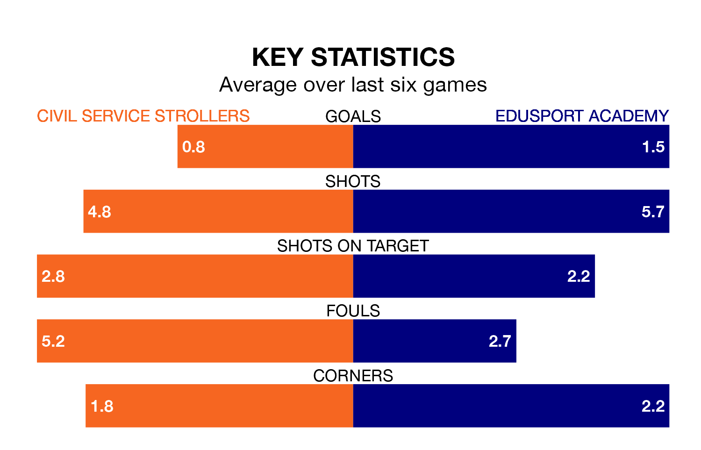

Civil Service Strollers host Edusport Academy at Civil Service Sports Ground on Saturday on the back of three consecutive wins in Highland and Lowland Football Leagues.
Civil Service Strollers have picked up nine points from their last six games, and they face a Braves side who also won their last match, and have collected five points from the last possible 18.
Edusport Academy are zero in the table after 19 games, of which they have won six and drawn four, earning 22 points.
Civil Service Strollers are 14 places behind the Braves in 14th, with eight wins and three draws putting them on 27 points.
In the last five years, Civil Service Strollers and Edusport Academy have played each other on eight occasions. Civil Service Strollers won five of them, Edusport Academy two, and they drew once.
On average, Civil Service Strollers scored 1.9 goals and the Braves 1.8 in those matches.
Their last meeting was on August 22, when Civil Service Strollers won 1-0 away.
With 24 goals in 19 games so far this season, the visitors are the league's joint-zero-lowest scorers with 1.3 goals per game. But they are conceding fewer than average too, letting in 26 goals at a rate of 1.4 per game.
The home side are also below average scorers, with 1.4 goals per game, compared to a league average of 1.7. They have conceded 1.2 goals per game.
Civil Service Strollers's last match was on November 11, a 1-0 win against Berwick Rangers, with Conrad Balatoni getting the goal for Civil Service Strollers.
Edusport Academy beat BSC Glasgow 3-1 last time out, on December 9, with Ross McNeil (two) and Aiden Clocherty on the scoresheet.
